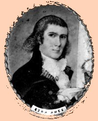

by
Stefan Bielinski
Ezra Ames was born in 1768. He was the son of Jesse and Bette Bent Ames of Framingham, Massachusetts. His mother died when he was seven and his father re-married. The boy moved with his family to Staatsburg, New York. His father (sometimes "Eames") was a former Revolutionary war soldier whose Dutchess County land was located along the Hudson River.
In 1790, Ezra Ames was a furniture and carriage painter in Worcester, Massachusetts. About that time, he began to paint portraits - initially specializing in miniatures.
In 1794, he married Zipporah Wood of Upton, Massachusetts. Their first child was born in 1795. In that year he brought his new family to Albany where he had entered the portrait and sign painting business in a waterfront shop on Mark Lane. He advertized gilding and limning and also custom painting on "signs, coaches, chaises, sleighs, standards, etc." By 1800, his modest Washington Street home included several young people. By 1815, he was listed in the city directory as a portrait painter at 41 South Pearl Street.
He lived in Albany for the rest of his life. Over the next three decades, Ames produced more than 500 portraits and other works in a variety of styles - making him Albany's most prolific and significant artist. His handsome portraits represent an album of early nineteenth-century Albany leaders and their families.
He was a member of a number of community-based organizations and a director (and in 1834 elected president) of the Mechanics and Farmers Bank. He was an officer of the Albany Masonic Lodge.
Ezra Ames died in February 1836 at the age of sixty-eight. His will passed probate in April. Today, his monument is a prominent icon at the Albany Rural Cemetery.
notes
 Sources: The life of Ezra Ames is CAP biography number 7128. This profile is derived chiefly from family and community-based resources. The chief work on his life, Ezra Ames of Albany, was published in 1955. A copy of his will is filed at the Albany County Surrogate's Court. His account book and other estate papers are at the New York State Library. A more critical analysis of his career is available online. Wikipedia!
Sources: The life of Ezra Ames is CAP biography number 7128. This profile is derived chiefly from family and community-based resources. The chief work on his life, Ezra Ames of Albany, was published in 1955. A copy of his will is filed at the Albany County Surrogate's Court. His account book and other estate papers are at the New York State Library. A more critical analysis of his career is available online. Wikipedia!
Portraits: A miniature, self-portrait was done about 1790. Reproduced in Ezra Ames, p. 8. Other portraits of the artist will be included!
privately posted 9/5/03; last revised 12/30/03